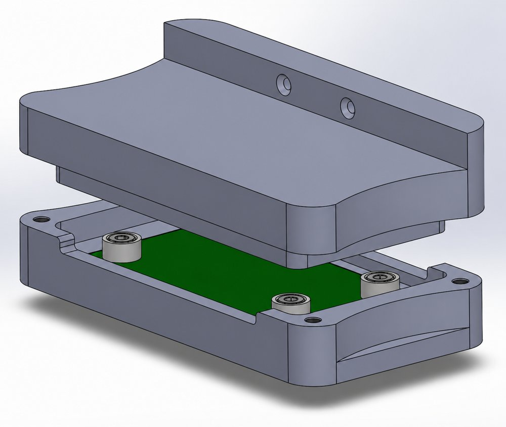

Project
Electrode Block
A magnetic mating feature that improved the reliability and ergonomics of an electrode block, while cutting cost per part.
Magnetic Mating
-$400/Part
Ergonomic Redesign

A magnetic mating feature that improved the reliability and ergonomics of an electrode block, while cutting cost per part.
The existing electrode block was unreliable to mate by hand and carried unnecessary cost, calling for a redesign that improved ease-of-use while reducing cost per part.
